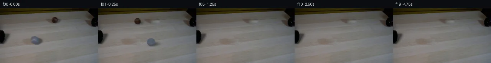
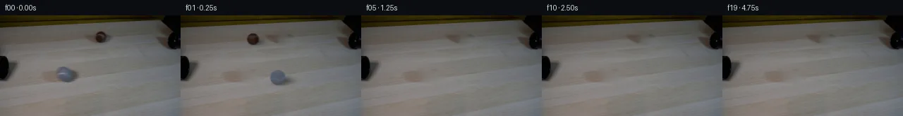
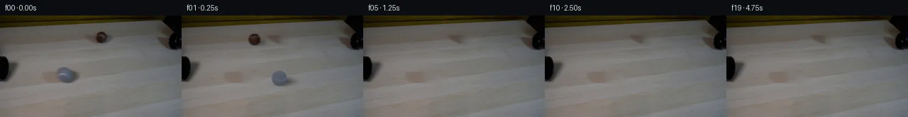
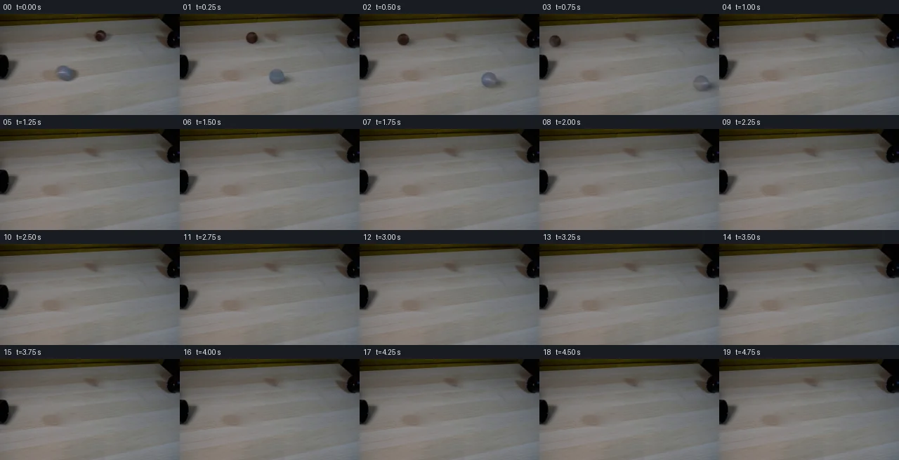
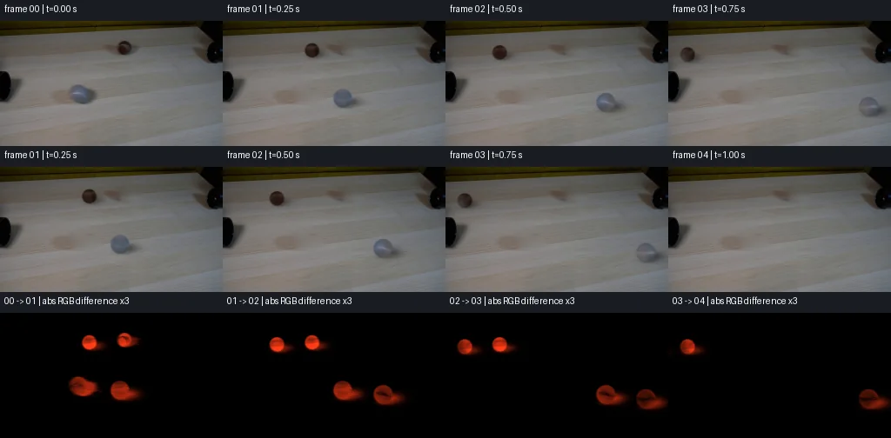

V0 · 初版
2026-11-05T18:54:23.550027+00:00 · RGB 143d109e2772
![]()
Observable Generation Trace
把最终像素视频、Harness 冻结的每轮候选、真实工具事件和 Agent 自述放在同一页。可观测证据与模型自述分开标记，避免把“模型说它检查过”误当成真实工具调用。
![首帧]()
Static locked-off single-shot with fixed frame throughout filmed with constant framerate in real-time. The scene shows a realistic scientific demonstration. The scene only contains the described setup and actions. The two black pipes are on opposite sides of the light-colored wooden table, but offset of each other. The brown and the grey tennis balls roll with high speed straight out of the two black pipes.
首帧显示在左侧播放器初始画面。Track 权限、隔离和 tensor 一致性来自 run manifest，而不是 METHOD.md。
默认勾选初版和最终版；可选其他版本一起同步播放。仅检查图更新的连续重复快照已合并，回退旧视频仍保留为一次修订。
Observable events
来源：events.jsonl + run manifest
此 Track 禁止读取输出图片。逐轮预览由外部 Harness 自动冻结，只用于事后审计，生成 Agent 当时看不到这些页面。
Frozen candidates
每张图来自该 round 的真实 00 / 01 / 05 / 10 / 19 帧

pixels 4b5b119ca2ef2d2e · code 79245c2778a8c72a
--- previous/generate.py
+++ current/generate.py
@@ -0,0 +1,290 @@
+"""Local, deterministic pixel continuation of the supplied scientific demonstration.
+
+No networks, models, renderer engines, or image viewing. All scene analysis and
+rendering use the supplied RGB array, NumPy/SciPy, and Pillow pixel operations.
+"""
+from pathlib import Path
+import base64
+import json
+import re
+import numpy as np
+from PIL import Image, ImageDraw
+from scipy.ndimage import map_coordinates, gaussian_filter, binary_dilation
+from scipy.sparse import csr_matrix
+from scipy.sparse.linalg import spsolve
+from artifact_io import save
+
+ROOT = Path(__file__).resolve().parent
+TEMP = ROOT / '.tmp'
+TEMP.mkdir(exist_ok=True)
+SOURCE = np.asarray(Image.open(ROOT / 'first_frame.png').convert('RGB'))
+H, W = SOURCE.shape[:2]
+YY, XX = np.mgrid[:H, :W]
+
+
+def ellipse(cx, cy, rx, ry):
+ return ((XX-cx)/rx)**2 + ((YY-cy)/ry)**2 < 1
+
+
+BROWN_REMOVE = (ellipse(143, 31, 10.2, 9.4) |
+ ellipse(149.5, 33.8, 12.8, 6.0))
+GREY_REMOVE = (ellipse(90.5, 83.5, 13.0, 12.0) |
+ ellipse(101, 87.5, 18.0, 10.3))
+REMOVE = BROWN_REMOVE | GREY_REMOVE
+
+
+def repair_wood(image, mask, offset):
+ """Same-row donor texture with a Poisson boundary match.
+
+ A donor displaced horizontally supplies the grain, while clean strips at
+ both ends of each row supply a linear illumination correction. Solving a
+ Dirichlet Poisson system preserves donor detail and exactly respects the
+ untouched boundary pixels. Only masked pixels are replaced.
+ """
+ arr = image.astype(float)
+ donor = SOURCE[:, np.clip(np.arange(W)-offset, 0, W-1)].astype(float)
+ guide = donor.copy()
+ rows = np.flatnonzero(mask.any(axis=1))
+ # Use the clean image strips beyond the widest object+shadow footprint.
+ lo = int(np.where(mask)[1].min())
+ hi = int(np.where(mask)[1].max())
+ left = np.arange(lo-15, lo-2)
+ right = np.arange(hi+3, hi+16)
+ a, b = float(left.mean()), float(right.mean())
+ for y in range(max(0, rows.min()-2), min(H, rows.max()+3)):
+ dl = np.median(arr[y, left]-donor[y, left], axis=0)
+ dr = np.median(arr[y, right]-donor[y, right], axis=0)
+ f = ((np.arange(W)-a)/(b-a))[:, None]
+ guide[y] = donor[y] + dl + f*(dr-dl)
+ coords = np.argwhere(mask)
+ count = len(coords)
+ ids = np.full((H,W), -1, int)
+ ids[mask] = np.arange(count)
+ ri, ci, vv = [], [], []
+ rhs = np.zeros((count,3))
+ for i,(y,x) in enumerate(coords):
+ diag = 0.
+ for dy,dx,weight in [(0,1,2.),(0,-1,2.),(1,0,1.),(-1,0,1.)]:
+ ny,nx = y+dy,x+dx
+ if not (0<=ny<H and 0<=nx<W):
+ continue
+ diag += weight
+ rhs[i] += weight*(guide[y,x]-guide[ny,nx])
+ j = ids[ny,nx]
+ if j>=0:
+ ri.append(i);ci.append(j);vv.append(-weight)
+ else:
+ rhs[i] += weight*arr[ny,nx]
+ ri.append(i);ci.append(i);vv.append(diag)
+ mat = csr_matrix((vv,(ri,ci)),shape=(count,count))
+ arr[mask] = np.clip(spsolve(mat,rhs),0,255)
+ return arr
+
+
+BACKGROUND = repair_wood(SOURCE, BROWN_REMOVE, 35)
+BACKGROUND = repair_wood(BACKGROUND, GREY_REMOVE, 52)
+BACKGROUND_U8 = np.rint(BACKGROUND).astype(np.uint8)
+Image.fromarray(BACKGROUND_U8).save(TEMP / 'background.png')
… diff truncated; 203 more lines …pixels 4b5b119ca2ef2d2e · code 530721b792bdf533
--- previous/generate.py
+++ current/generate.py
@@ -250,8 +250,8 @@
assert np.array_equal(png,frames[n]),n
# Confirm source background pixels are precisely preserved outside the
# repaired footprints once the balls have exited, and the camera is fixed.
- assert np.array_equal(frames[4][~REMOVE],SOURCE[~REMOVE])
- assert all(np.array_equal(frame,frames[4]) for frame in frames[4:])
+ assert np.array_equal(frames[5][~REMOVE],SOURCE[~REMOVE])
+ assert all(np.array_equal(frame,frames[5]) for frame in frames[5:])
# Check the embedded standalone-player delta stream reconstructs the same
# RGB tensor, without a browser or image tool.
html=(ROOT/'index.html').read_text()
pixels fde268fd3052a80d · code 6a43cfc4d4dbac2d
--- previous/generate.py
+++ current/generate.py
@@ -38,7 +38,7 @@
A donor displaced horizontally supplies the grain, while clean strips at
both ends of each row supply a linear illumination correction. Solving a
- Dirichlet Poisson system preserves donor detail and exactly respects the
+ Dirichlet Poisson system retains attenuated donor detail and exactly respects the
untouched boundary pixels. Only masked pixels are replaced.
"""
arr = image.astype(float)
@@ -69,7 +69,7 @@
if not (0<=ny<H and 0<=nx<W):
continue
diag += weight
- rhs[i] += weight*(guide[y,x]-guide[ny,nx])
+ rhs[i] += .25*weight*(guide[y,x]-guide[ny,nx])
j = ids[ny,nx]
if j>=0:
ri.append(i);ci.append(j);vv.append(-weight)
@@ -142,6 +142,11 @@
# Back surface is a continuous mirrored extension of the only observed
# hemisphere, a deliberate approximation rather than recovered 3D data.
albedo=source_texture(ball,mx,my,np.abs(mz))
+ if ball['name']=='brown':
+ # The unseen hemisphere is constrained to the observed brown body
+ # color; uncertain silhouette/reflection colors do not dominate it.
+ backside=np.clip(-mz,0,1)[...,None]
+ albedo=albedo*(1-.60*backside)+np.array([44.,28.,20.])*.60*backside
colors=albedo*illumination(nx,ny,nz)[...,None]
return np.clip(colors,0,255)
pixels fde268fd3052a80d · code 6a43cfc4d4dbac2d
No generate.py text change in this frozen round.

pixels 6eae145af1b927ed · code 2106fad597c39465
--- previous/generate.py
+++ current/generate.py
@@ -27,7 +27,7 @@
BROWN_REMOVE = (ellipse(143, 31, 10.2, 9.4) |
- ellipse(149.5, 33.8, 12.8, 6.0))
+ ellipse(150.0, 33.3, 14.0, 8.4))
GREY_REMOVE = (ellipse(90.5, 83.5, 13.0, 12.0) |
ellipse(101, 87.5, 18.0, 10.3))
REMOVE = BROWN_REMOVE | GREY_REMOVEFinal visual checks
Harness 保存的最终产物


Agent claims
以下文字由生成 Agent 撰写，不等同于工具证据
The source was inspected only with local Python/Pillow/NumPy and numeric RGB samples and connected-component measurements. No image Read/View tools were used. Coordinates are in source pixels with origin at the upper-left.
Keep the source as a fixed background. Repair only the two original ball/shadow footprints using nearby same-row wood pixels, a local illumination fit, and boundary-matched interpolation. Extract ball appearance from the source and use local inverse sphere texture sampling with analytic shading, rolling rotation, soft contact shadows, and brief exposure integration. Use straight trajectories with modest rolling resistance. No external models or engines. Frame 00 is copied byte-for-byte at the RGB pixel level.
Sample times are t = frame / 4 seconds. Brown initial speed is 164 screen pixels/s to the left; grey initial speed is 188 screen pixels/s to the right. Each loses 6 pixels/s of speed per elapsed second. Lane slopes: brown dy/distance=0.060, grey dy/distance=0.105. Continue through the edges naturally. The remaining locked shot holds the unchanged setup after the fast balls leave the camera view.
| Frame | Time (s) | Brown center (px) | Grey center (px) | Event |
|---|---|---|---|---|
| 00 | 0.00 | (143.00, 31.00) | (90.50, 83.50) | Exact source; both balls already emerged |
| 01 | 0.25 | (102.19, 33.45) | (137.31, 88.42) | Fast straight rolls; moving shadows and rotating surface detail |
| 02 | 0.50 | (61.75, 35.88) | (183.75, 93.29) | Fast straight rolls; moving shadows and rotating surface detail |
| 03 | 0.75 | (21.69, 38.28) | (229.81, 98.13) | Fast straight rolls; moving shadows and rotating surface detail |
| 04 | 1.00 | (-18.00, 40.66) | (275.50, 102.92) | Both balls outside view; fixed table and pipes hold |
| 05 | 1.25 | (-57.31, 43.02) | (320.81, 107.68) | Both balls outside view; fixed table and pipes hold |
| 06 | 1.50 | (-96.25, 45.35) | (365.75, 112.40) | Both balls outside view; fixed table and pipes hold |
| 07 | 1.75 | (-134.81, 47.67) | (410.31, 117.08) | Both balls outside view; fixed table and pipes hold |
| 08 | 2.00 | (-173.00, 49.96) | (454.50, 121.72) | Both balls outside view; fixed table and pipes hold |
| 09 | 2.25 | (-210.81, 52.23) | (498.31, 126.32) | Both balls outside view; fixed table and pipes hold |
| 10 | 2.50 | (-248.25, 54.47) | (541.75, 130.88) | Both balls outside view; fixed table and pipes hold |
| 11 | 2.75 | (-285.31, 56.70) | (584.81, 135.40) | Both balls outside view; fixed table and pipes hold |
| 12 | 3.00 | (-322.00, 58.90) | (627.50, 139.88) | Both balls outside view; fixed table and pipes hold |
| 13 | 3.25 | (-358.31, 61.08) | (669.81, 144.33) | Both balls outside view; fixed table and pipes hold |
| 14 | 3.50 | (-394.25, 63.23) | (711.75, 148.73) | Both balls outside view; fixed table and pipes hold |
| 15 | 3.75 | (-429.81, 65.37) | (753.31, 153.10) | Both balls outside view; fixed table and pipes hold |
| 16 | 4.00 | (-465.00, 67.48) | (794.50, 157.42) | Both balls outside view; fixed table and pipes hold |
| 17 | 4.25 | (-499.81, 69.57) | (835.31, 161.71) | Both balls outside view; fixed table and pipes hold |
| 18 | 4.50 | (-534.25, 71.63) | (875.75, 165.95) | Both balls outside view; fixed table and pipes hold |
| 19 | 4.75 | (-568.31, 73.68) | (915.81, 170.16) | Both balls outside view; fixed table and pipes hold |
Verify 20 RGB PNGs, resolution, frame-00 equality, uint32 packed 0xRRGGBB tensor shape (144, 256, 20), and exact PNG/tensor agreement. Generate a contact sheet and transition sheet for human inspection; report numeric validation only, without claiming a visual review.
Numeric transition validation showed a physically consistent remainder of the brown cast shadow at the left edge at t=1.00 s, with a tiny grey shadow remainder at the right edge. Keep that natural exit. The entirely static ending starts at frame 05, t=1.25 s. Ball radius increases by 0.4% per downward screen pixel to approximate perspective.
A second numeric refinement expanded the brown shadow repair to include the weak shadow near (155, 28). The boundary-matched donor gradient is attenuated to 25% to avoid blue/bright overshoot in the small repaired wood patch. The unknown back of the brown sphere is blended toward its measured body color.
This is a deterministic local pixel synthesis from first_frame.png, guided by prompt.txt. Source inspection used Pillow/NumPy RGB samples, coordinate measurements, and SciPy connected components. No image Read/View tools, networks, external references, models, engines, or subagents were used. The saved sheets were generated for inspection; no visual review is claimed.
The 256 × 144 camera view remains fixed. Frame 00 copies the supplied RGB image exactly. The two balls are already outside their pipes in that frame, so their motion continues immediately. The brown ball rolls left and the grey ball rolls right along slightly downward, offset projected lanes. Their measured starting centers are (143, 31) and (90.5, 83.5), with radii 8.15 and 10.4 pixels. The balls remain separate and do not collide.
The original ball and shadow footprints are removed from a background copy using horizontal donor pixels from the same tabletop. Clean adjacent strips provide an illumination correction. A sparse Poisson boundary solve incorporates 25% of the donor gradient, retaining restrained grain detail while avoiding local overshoot. Only the two specified footprint masks are repaired; the remaining photographed background, black pipes, and frame edges are preserved exactly once the moving shadows leave.
Each ball uses surface colors sampled from its photographed source disk. An inverse sphere rotation maps the photographed surface detail onto each new visible hemisphere. Analytic diffuse shading stays aligned with the scene, while surface detail rotates with distance traveled. Fourfold spatial sampling and a small Gaussian filter soften fractional-pixel silhouettes. The unknown back surface is a mirrored continuation of the observed front; the brown back surface is also blended toward its observed brown body color. This is an explicit appearance approximation, not a recovered 3D model. No new detailed tennis-ball seam geometry is asserted.
Positions use distance d = v*t - 3*t*t, with starting speeds of 164 pixels/s for brown and 188 pixels/s for grey. Brown follows (143-d, 31+0.060*d); grey follows (90.5+d, 83.5+0.105*d). Both therefore travel along straight projected paths with modest rolling resistance. Radius increases by 0.4% per downward pixel as a small perspective approximation. The speed is an inferred screen-space continuation rather than a measurement of real-world units. Soft elliptical cast shadows and narrow contact shadows move with each ball. Seven temporal samples integrate a 1/100-second exposure for each frame.
The fast balls leave view within approximately one second. A faint final cast-shadow edge remains at frame 04, and frame 05 onward holds the stationary setup. This ending is intentional for the requested real-time, locked camera shot.
OBSERVATION.md: scene measurements and the 20-frame event plan, written before the generation implementation, with subsequent refinements recorded.generate.py: complete reproducible generation, artifact writing, and validation.pixels.npz: pixels, a uint32 tensor with shape (144, 256, 20). Each value packs RGB as 0xRRGGBB.frames/00.png through frames/19.png: 20 RGB frames, 256 × 144, played at 4 fps for 5 seconds.inspection.png: all 20 frames in a labeled contact sheet.transition_check.png: early adjacent frames and numeric RGB difference maps, including the exit transition.index.html: a standalone player with embedded lossless packed pixels, playback, looping, and frame seeking..tmp/validation.json: machine-readable consistency results.Run python generate.py from this workspace. The generation script verifies the dimensions and RGB format of all 20 PNGs, tensor shape/dtype/value range, exact frame-00 pixel equality, and exact PNG-to-tensor correspondence for every frame. It also decodes the player’s embedded delta packets and verifies every reconstructed frame against the tensor. Assertions confirm that the final stationary background preserves every source pixel outside the repaired footprints and that frames 05–19 are identical. Both diagnostic PNGs are generated without opening them in a viewer.